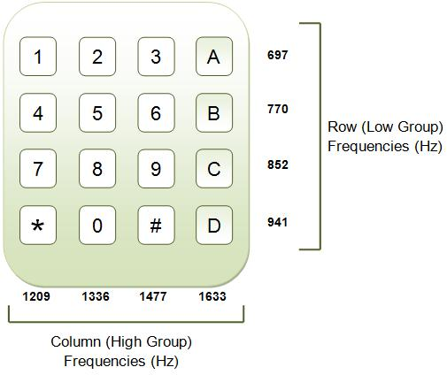

DTMF Decoder in Python
A dual-tone multi-frequency decoder coded in Python using integer-based digital signal processing.

Role / Tools / Timeline
- Role: Sole developer
- Tools: Python, NumPy, signal processing techniques
- Timeline: Rapid prototype for coursework
What I Built
- Implemented integer-based DSP to decode DTMF tones
- Validated tone recognition across keypad inputs
- Packaged scripts for repeatable decoding tests
Results
- Reliable detection of standard keypad tone pairs